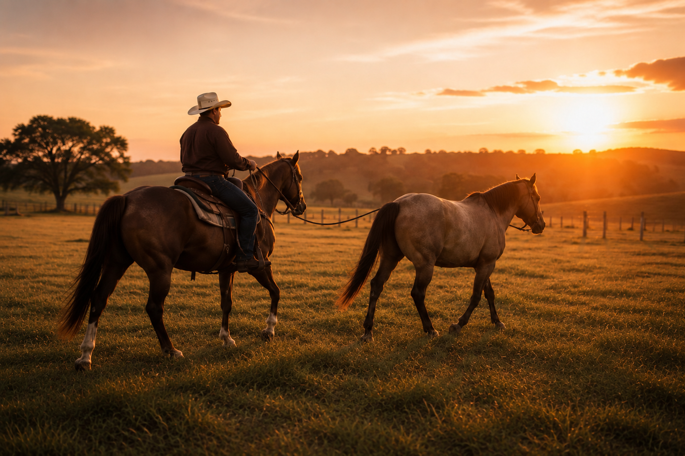

01
Nossa história
Uma paixão transformada em propósito
O Haras Aurora nasceu do desejo de criar um lugar em que a tradição e a evolução pudessem caminhar juntas. Localizado na Bahia, o projeto foi concebido para valorizar a essência do campo e oferecer uma experiência equestre marcada pela qualidade.
Desde o início, cada decisão foi orientada pelo cuidado com os detalhes, pela construção de uma identidade própria e pelo compromisso de desenvolver um espaço capaz de atravessar gerações.